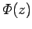

Inhalt Index DeskTop Bronstein

 Lineare Integralgleichungen Singuläre Integralgleichungen Singuläre Integralgleichungen mit Cauchy-Kernen Lösung der charakteristischen Integralgleichung
Lineare Integralgleichungen Singuläre Integralgleichungen Singuläre Integralgleichungen mit Cauchy-Kernen Lösung der charakteristischen Integralgleichung


Ist  die allgemeine Lösung des inhomogenen HILBERTschen Problems, dann kann die Lösung der inhomogenen Integralgleichung nach (11.90a) bestimmt werden:
Einsetzen von (11.96c) in (11.96b) liefert schließlich unter Beachtung von (11.89b) und
g(x) =f(x)/(a(x)+b(x)) die Lösungsdarstellung:
| Beispiel |
|
Gegeben ist die charakteristische Integralgleichung mit konstanten Koeffizienten a und b |